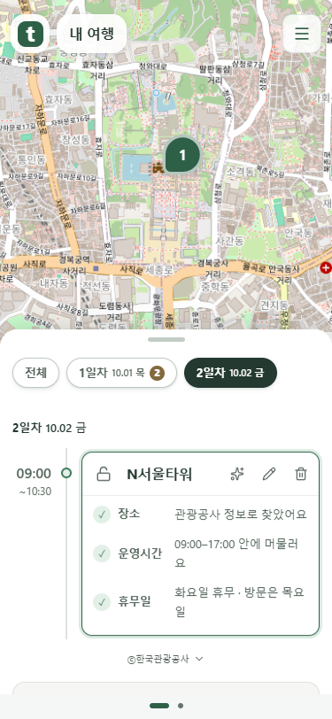

날짜 선택 복구 · 확인 필요 배치 비교
날짜 선택 배경은 실제 탭 너비에 다시 맞춥니다. 카드 배치는 아래 추천안까지 비교했으며, 제품의 기존 배치는 유지합니다.
문제 항목을 상태 바로 왼쪽으로 모으는 안을 추천합니다
접힌 카드에서는 ‘무엇을 확인해야 하나’를 짧게 묶어 읽습니다. 일정을 펼치면 각 항목의 자세한 설명을 읽습니다. 문제 항목이 많거나 폭이 좁으면 줄을 바꾸고 ‘확인 필요’는 맨 아래 오른쪽에 둡니다.
| 비교 | 현재 | 추천 |
|---|
| 읽기 | 문제 항목의 시작점이 일정해 세로로 훑기 쉽습니다. | 문제 항목과 상태를 가까이 두어 하나의 안내로 읽습니다. |
| 여백 | 문제 항목과 상태 사이에 넓은 빈 공간이 생깁니다. | 문제 항목과 상태 사이12px, 카드 안쪽12px를 둡니다. |
| 비율 | 제목을 가장 먼저 읽고,12px의 문제 항목·상태는 보조 정보로 둡니다. 가로폭을 고정 비율로 나누지 않고 글자 길이에 맞춥니다. |
추천은 디자인 판단입니다. 실제 이용자를 대상으로 어느 배치가 더 빠른지 비교한 실험 결과는 아닙니다.
다른 회사의 공식 기준
Atlassian의 Lozenge는 의미 있는 상태를 짧은 배지로 표시하며 ‘needs review’를 주의 상태의 예로 듭니다. IBM Carbon의 안내 지침은 문제 안내를 관련 항목 가까이에 두고 짧게 쓰도록 권합니다.
두 회사가 이 카드와 똑같은 배치를 사용한다는 근거는 아닙니다. 짧은 상태 표시와 주변 설명을 구분하는 지침을 이 화면에 적용해 추천했습니다.
수정안 왕복·직접 수정 복귀 후 날짜 선택
탭 배지·글꼴·여백 너비와 화면 크기 변경을 감지합니다. 끄는 중에는 진행 비율을 유지하고, 놓으면 선택 탭에 정렬합니다. 새 응답에 현재 날짜가 없으면 첫 유효 날짜를 표시합니다.

실제 Chrome · mock 서버 촬영입니다. 공개 cs 프로젝트 서버 응답·x600 서버 배포 확인과 구분합니다.